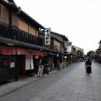
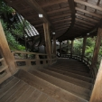
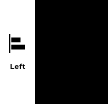
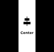
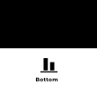

Ore no Flexible CSS Grid System.
俺流のフレキシブルCSSグリッドシステム 「Olex」のデモページ。 「Olex」はFlexboxを利用した 単なるグリッドシステムなので、 気になった方は、解説ページを参考に 自分で作ってもらえたらと思います。


Overview
12カラムを基準として
必要なカラム数を指定するグリッドシステム。
間隔を開けるも閉じるも、その大きさも選択できる。
位置揃えや順番の入れ替えも可能。
後は自分でカスタマイズして下さい。
Feature
Flexboxを利用したグリッドシステムで、単なる横並びや12カラムをベースとしたグリッドレイアウトも可能です。グリッド間のスペースにはborderを利用していて間隔の調整が容易にできます。もちろんこのページのレイアウトは「Olex.css」を使っているので、詳しくはデベロッパーツールで。
Grid
12カラムを基準としたグリッドシステム。
Alignment
各アイテムの位置を揃えることもできる。

Direction
アイテムの並び順を逆順に変更できる。

Grid
スマホは2列PCは4列なども
属性値の付け替えでOK。
間隔を開けるも閉じるも、属性で調整。
間隔の大きさも拡張可能。
Flexible
スマホ、タブレット、PCで異なるカラムのレイアウトも容易に対応できます。 12カラムをベースとして、必要なカラム数をカスタムデータ属性で指定するだけでレイアウトが可能。




Gutter
各アイテム間のスペースもカスタムデータ属性を指定するだけで、スペースの有無はもちろん、その大きさも選択できます。また、このスペースには border プロパティを使っているので、スペースのサイズを拡張するのも容易です。
Alignment
水平方向の位置揃えや垂直方向の位置揃えもできます。
左のカラムに大きな写真、右のカラムにはテキストを天地中央に配置なんてことも可能です。



Direction
カラムの並び順も変更可能。
カスタマイズ次第では、
個別に順番を入れ替えることだってできる。
Normal →
1
2
3
4
5
6
7
8
9
10
11
12
13
14
15
16
17
18
19
20
21
22
23
24
← Reverse
1
2
3
4
5
6
7
8
9
10
11
12
13
14
15
16
17
18
19
20
21
22
23
24